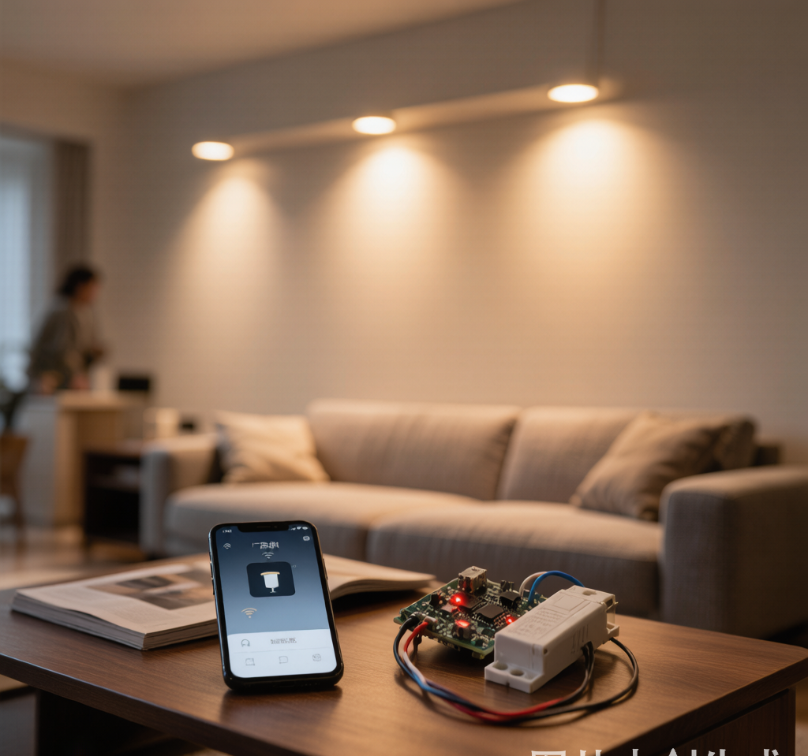

网关换了三个，灯还是掉——问题根本不在网络
"凌晨两点起来上厕所，感应灯延迟了三秒才亮，差点撞门框上"——这不是段子，是什么值得买上一个装修完三个月的用户真实遭遇。
小红书、知乎上搜"智能灯掉线"，吐槽能刷一下午。大部分人的第一反应是：网关太远了、Wi-Fi信号不好、Zigbee协议不稳。于是买信号放大器、换网关、甚至把刚装好的Zigbee灯全拆了换Wi-Fi直连——折腾一圈，问题照旧。
有没有想过，问题可能根本不在协议上，而在灯具内部那个不起眼的驱动电源？
智能灯的"大脑"有两个
很多人以为智能灯就是"灯泡加了个无线模块"。实际上，一盏智能灯里有两套"大脑"：
- 通信模块（Zigbee/Wi-Fi/蓝牙芯片）：负责接收指令
- 驱动电源：把220V交流电转成灯珠需要的恒流直流电
通信模块功耗很低，通常只需要3.3V几十毫安的供电。这个供电从哪来？从驱动电源的辅助绕组取电。
关键就在这里：如果驱动电源的输出不稳定，通信模块也会跟着不稳定。
现象就是：灯还能亮，但Zigbee模块间歇性"失踪"——APP里显示离线，重启后又恢复了。这不是网络问题，这是电源的纹波干扰。
三类掉线，根源各不同
第一类：灯还亮着，APP显示离线
这是最经典的"驱动电源纹波干扰"症状。驱动电源的输出端叠加了过大的交流纹波，导致通信芯片供电不稳。
根因：用了廉价非隔离驱动电源，或者驱动电源的输出滤波电容容量不足、老化。
怎么判断：如果同一网关下的其他智能设备（传感器、开关）全部正常，只有某几盏灯频繁离线——八成是这几盏灯的驱动电源不行。
第二类：调光到低亮度时闪、抖、离线
深水宝上几十块的智能驱动电源，标称"0-100%调光"，实测到10%以下就开始抖。这不只是观感问题。
当PWM占空比极低时，驱动电源的输出电流处于临界状态。如果电源的环路补偿没做好，输出会低频振荡——通信模块的供电跟着一起振荡，芯片反复重启，自然就"掉线"了。
根因：驱动电源的低端调光线性度差，PWM分辨率不足（低于12bit的驱动电源很难做到真·1%平滑调光）。
第三类：开灯瞬间，其他智能设备集体离线
这个最隐蔽。当你打开一盏大功率LED吸顶灯，同时客厅的传感器、门锁全掉线了——干扰不是来自Wi-Fi，是来自驱动电源的EMI辐射。
廉价驱动电源的EMI滤波能省就省。开灯瞬间的浪涌电流和开关噪声，通过电源线传导到整个电路回路。Zigbee工作在2.4GHz频段，对电源噪声极其敏感。
2026年，选驱动电源要看这四点
1. 非隔离 vs 隔离，稳定性的分水岭
非隔离驱动成本低、体积小，但在电网波动大的地区（老小区、夏天用电高峰期），输出稳定性很差。智能照明强烈建议选隔离型驱动——输入端和输出端有变压器物理隔离，纹波和共模干扰都低一个数量级。
2. 输出纹波 ≤ ±5%
靠谱的智能LED驱动电源，标称输出纹波应该在±5%以内。很多品牌不会主动标这个参数，但你可以问客服要"纹波噪声测试报告"。如果对方不知道你在说什么——这家的驱动就别买了。
3. PWM分辨率 ≥ 12bit
低端调光是系统的"压力测试"。12bit意味着4096级调光精度，1%亮度下仍有40级可调。低于10bit的驱动电源，低亮度时要幺闪要幺跳——不是灯的问题，是驱动电源跟不上。
4. 看认证，不只看CCC
CCC是底线。智能驱动电源要过EMC电磁兼容测试（GB/T 17743）才行。如果产品页只写了CCC而不敢提EMC，说明它很可能没做过完整测试。欧盟CE认证里的EN 55015也是同一个意思。
一句话总结
智能灯掉线，先别怪协议和网关。先问自己三个问题：
- 驱动电源是隔离还是非隔离？
- 输出纹波多少？
- 低端调光到1%稳不稳？
这三个问题的答案，比你换十个网关都有用。
稳定的灯光，从一个靠谱的驱动电源开始。
有智能照明选型困惑？欢迎留言交流。